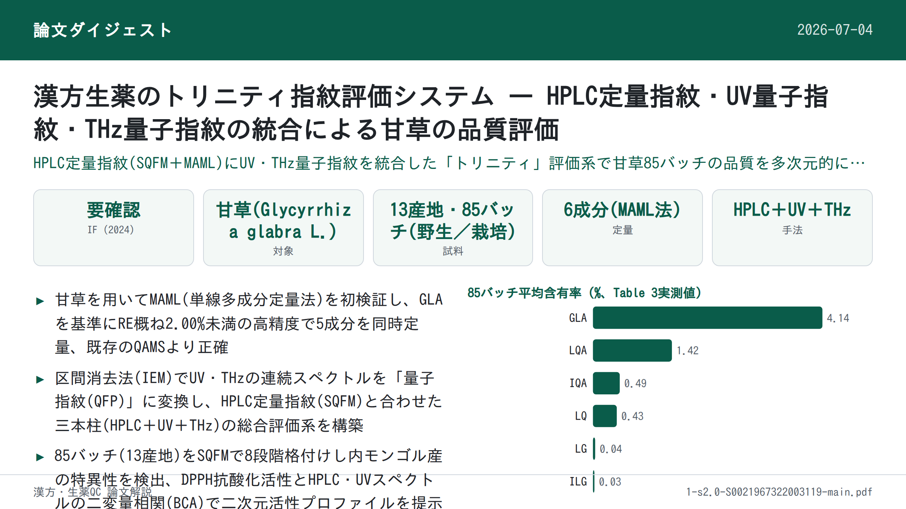
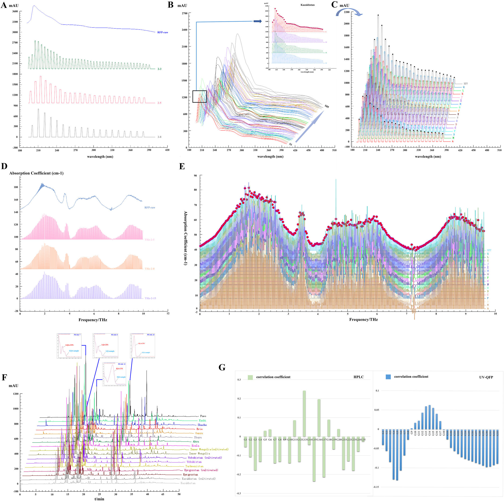

漢方生薬のトリニティ指紋評価システム — HPLC定量指紋・UV量子指紋・THz量子指紋の統合による甘草の品質評価

書誌情報
- 標題（原題）: A trinity fingerprint evaluation system of traditional Chinese medicine
- 著者・所属: Huizhi Yang, Ting Yang, Dandan Gong, Xiaohui Li, Guoxiang Sun※, Ping Guo※（瀋陽薬科大学薬学院／中国交通技術(江門)有限公司, 中国）※責任著者
- 掲載誌・巻号・DOI: Journal of Chromatography A 1673 (2022) 463118. https://doi.org/10.1016/j.chroma.2022.463118
- インパクトファクター: 要確認（Journal of Chromatography A, JCR 2024 / Clarivate。複数の二次情報源（resurchify, exaly, bioxbio等）で3.8〜4.2程度の異なる値が報告されており、Clarivate公式値を一次情報で確認できなかったため数値は明記しない）
- 受理経過 / ライセンス: 受領 2022-02-26 / 改訂 2022-04-29 / 採録 2022-05-02 / オンライン公開 2022-05-10。© 2022 Elsevier B.V. All rights reserved.
補足: 略語一覧（原文Abbreviationsより）— BCA: 二変量相関解析(bivariate correlation analysis)／ESM: 外部標準法(external standard method)／GLA: 甘草酸(glycyrrhizic acid)／IEM: 区間消去法(interval erasure method)／ILG: イソリクイリチゲニン(isoliquiritigenin)／IQA: イソリクイリチンアピオシド(isoliquiritin apioside)／LG: リクイリチゲニン(liquiritigenin)／LQ: リクイリチン(liquiritin)／LQA: リクイリチンアピオシド(liquiritin apioside)／MAML: 単線多成分定量法(multi-markers assay by monolinear method)／MEMA: 測定基準物質(measurement marker)／QAMS: 単一標準物質による多成分同時定量法(quantitative analysis of multi-components by single-marker)／QFP: 量子指紋(quantum fingerprint)／RFP: 参照指紋(reference fingerprint)／SQFM: 系統的定量指紋法(systematically quantified fingerprint method)／TCM: 中医薬(traditional Chinese medicine)／PCA: 主成分分析／FIA: フローインジェクション分析(flow injection analysis)。
要旨（Abstract）
本研究は、中医薬(TCM)の多層性・多特性を反映しうる一連の品質評価法の開発に焦点を当てた。方法開発サンプルとして甘草(Glycyrrhiza glabra L.)を用い、活性成分間の標準曲線関係を通じて、単線多成分定量法(multi-markers assay by monolinear method, MAML)の実現可能性を初めて検討した。甘草酸を測定基準物質(MEMA)として、MAMLにより甘草の5成分（イソリクイリチゲニン、イソリクイリチンアピオシド、リクイリチゲニン、リクイリチン、リクイリチンアピオシド）を同時定量できた。MAMLとQAMS（単一標準物質による多成分同時定量法）をそれぞれ外部標準法(ESM)と比較したところ、MAMLとESMで算出した成分含量には有意差がなく（相対誤差(RE)は概ね2.00%未満）、一方でQAMSにより算出した成分含量のREは大きく変動しており、MAMLがQAMSより正確であることが示された。さらに、区間消去法(interval erasure method, IEM)によりUVおよびTHzの量子指紋を構築した。系統的定量指紋法(systematically quantified fingerprint method, SQFM)を核として、HPLC・UV・THzに基づく「トリニティ」指紋品質評価系を開発した。本系は、総合評価結果により13産地・2生育様式（野生／栽培）の甘草試料の品質差を判別することに成功した。同時に、異なる技術水準（生育様式）における甘草の品質情報も明らかにした。最後に、二変量相関解析(bivariate correlation analysis, BCA)を用いてUV/HPLCと抗酸化スペクトル効果の連関を検証し、甘草の二次元活性スペクトルを提供した。本手法は、化学指紋特徴、化学結合振動特性、生物活性情報の面で、甘草さらには他のTCMに対し、より徹底的かつ客観的な分析技術を提供しうる。
1. 序論（Introduction）
2019年の新型コロナウイルス(2019-nCoV)の流行以降、中医薬(TCM)は中国における予防・治療戦略の重要な柱となっている[1]。一方、薬物の安全性はTCMの内在品質と密接に関わる[2,3]。産地の違いや栽培方法の違いなど様々な事情により、内在品質は大きく変動しうる[4]。TCMの複雑な混合機序も品質管理を一層困難にしている[5]。そこで本研究では、13産地から得た85バッチの甘草(Glycyrrhiza glabra L.)を方法開発サンプルとし、TCMのための統合的品質管理法の構築に取り組んだ。
現在、クロマトグラフィー指紋、特にHPLC指紋はTCMの品質管理に広く利用されている[6,7]。しかしHPLC-DAD指紋分析は一般に固有の波長で決定されるため、単一波長では一部の物質の応答が低すぎて後続のデータ処理や検出自体が困難になりうる[8]。単一波長では全化合物の最大紫外(UV)吸収特性を特徴づけられない。そこで、他波長の指紋情報も考慮し有用情報を掘り起こす基盤として、三波長最大融合指紋が確立された[9,10]。しかし、この手法もUV吸収を持つ共通化合物の指紋特性しか考慮していなかった[11,12]。このような状況下、複数の検出技術を組み合わせてTCMの品質を管理することが不可欠であった。紫外可視分光は主として共役系・芳香族系成分の不飽和結合情報を明らかにし、フローインジェクション分析(FIA)と組み合わせることで、低消費・高精度かつ主観的な波長選択の一面性を回避した迅速分析が可能となる[13–15]。分子の集団的挙動と結びついたテラヘルツ(THz)応答は、TCM中の高分子（アミノ酸、糖類等）の全体構造や関連する環境情報の振動モードを反映しうる[16–19]。
これら3手法の原理は相補的であるだけでなく、TCM分析の分類・類似度評価にも共通して用いられている。しかしスペクトルデータは一般に連続信号・冗長情報・複雑な図形という特徴を持ち、包括的な定性・定量分析への利用が難しい。この問題を踏まえ、Guoxiang Sun教授[20,21]は「量子指紋(QFP)」を提案した。これは区間消去法(IEM)により連続的なスペクトル信号を定量化するもので、デジタル情報処理による統合・縮約の結果はクロマトグラフィー的な量子指紋ピークとして表現される。確立されたQFPは対象の情報特徴を保持しつつ、スペクトル特性をより簡潔・直感的にする。本研究では、クロマトグラフィー(HPLC-FP)とスペクトル(UV-QFP、THz-QFP)を用いた系統的定量指紋法(SQFM)によりTCMの品質を評価した。
さらに、TCMはいまだ体系的な標準化が達成されておらず、一部の標準物質は高価であるため、成分の定量が困難な場合がある[23]。そこで単線多成分定量法(MAML)[24]を提案し、甘草において初めて検証した。MAMLは単一標準物質による多成分同時定量法(QAMS)[25,26]からのさらなる革新である。線形範囲と系統的方法論、さらに誤差解析・信頼性解析理論に重点を置くことで、操作誤差を最小化し分析技術の精度を高める。本研究では甘草の定量指紋を用い、甘草酸を測定基準物質(MEMA)とし、定量成分の標準曲線のもとで絶対補正係数を算出後、対応成分の相対補正係数を算出した。活性化合物の定量管理に加え、1,1-ジフェニル-2-ピクリルヒドラジル(DPPH)ラジカル消去アッセイにより甘草試料のin vitro抗酸化活性を検討した[27–29]。二変量相関解析(BCA)[30]により、UVとHPLCの間の抗酸化活性のスペクトル-薬効関係を論じ、試料の二次元活性プロファイリングを提示した。要するに本論文は、TCMの機能的特性・多成分性・多層性等を反映しうる、科学的・厳密かつ標準化された品質評価法の確立を目指すものである。
2. 理論（Theory）
2.1 系統的定量指紋法（SQFM）
SQFM[22]は、実用性と適応性を兼ね備えたTCM系の巨視的定量評価法である。定性比類似度(SF’)は、大きなピークが小さなピークを覆い隠すという定性類似度(SF)の問題を克服できる。SF’は全ての指紋ピークに等しい重みを与える。TCMの化学指紋の数量・分布比を監視し曖昧さを解消する巨視的定性類似度因子(Sm)は、両者の平均値である。同様に、定量類似度(P)も、投影含量類似度(C)における大きなピークが小さなピークを隠す一面性を克服できる。PとCの平均値は巨視的定量類似度(Pm)と呼ばれ、化学指紋の全体含量を全体として監視するために用いられる。式(1)–(2)に全ての算式を示す（xi、yiはそれぞれ試料指紋(SFP)と参照指紋(RFP)のピーク面積を表し、RFPは全試料の指紋を平均して得る）。
したがって、SmとPmの両方を用いてTCMの品質を評価する方法をSQFMと呼び、両者のうち低い方の値が品質グレードを決定する。TCMは以下の8段階に分類される。
- Grade1 = [Sm≥0.95, 95%≤Pm≤105%]、Grade2 = [Sm≥0.90, 90%≤Pm≤110%]
- Grade3 = [Sm≥0.85, 85%≤Pm≤115%]、Grade4 = [Sm≥0.80, 80%≤Pm≤120%]
- Grade5 = [Sm≥0.70, 70%≤Pm≤130%]、Grade6 = [Sm≥0.60, 60%≤Pm≤140%]
- Grade7 = [Sm≥0.50, 50%≤Pm≤150%]、Grade8 = [Sm<0.50, 50%<Pm>150%]
補足: 原文にはSm・Pmの厳密な数式（式1・2）が組版の都合上乱れた形で掲載されているため、ここでは定義の要旨のみ訳出した。数式の正確な表記は原文PDF（DOI参照）を参照。
2.2 単線多成分定量法（MAML）
MAML[24]は、QAMS[23]の原理とTCM定量指紋の理論を組み合わせた新規手法である。複数の活性化合物の標準曲線を、指紋検出と同じクロマトグラフィー条件下で確立した。測定基準物質(MEMA)の標準曲線を用いて、他の化合物の標準曲線パラメータについて相対補正係数・誤差・信頼性を算出した。許容誤差範囲内で、標準曲線法を最大限に簡略化しつつ標準物質の使用を節約するという目的を達成する。MEMA(s)と他の化合物(i)の標準曲線に基づき絶対補正係数(fi)を算出する（式3–6）。bas=as/Cs、bai=ai/Ciという式は、basとbaiが濃度に大きく影響することを示す。濃度が大きいほど、切片/傾き比は小さくなり測定誤差も小さくなる。線形平均濃度C0=0.5(C1+C2)は、最良の試験試料濃度として一般に受け入れられている。式(7)に示す通り、相対補正係数(fsi)を算出する。ba=|a/C|≤1%b（誤差1.0%未満）の場合、式(8)の傾きの式を直接用いて算出でき、この比を単純相対補正係数(f’si)と呼ぶ。さらに、相対補正係数の誤差（方法信頼性Rと呼ぶ）も式(9)で検討され、これには秤量誤差(RSDCs)、標準曲線誤差(bas/bs)、MEMAの相対ピーク面積誤差(RSDAs)、他化合物の相対ピーク面積誤差(RSDAi)が含まれる。したがって、MAMLはQAMSにおける線形範囲検証・系統的技術検証の不足を補うものであり、試験技術者が誤りを排除する方法についても助言することができる。
補足: 式(3)–(10)（As=bsCs+as 等の回帰式・補正係数・信頼性Rの算出式）は数式組版の乱れのため詳細な数式表記を割愛。定義の骨子は本文訳出の通り。原文参照。
2.3 TCMのTHz量子指紋の整合性評価系
一般に、テラヘルツ透過スペクトルはTHz-TDS系で光学パラメータを抽出するために最も広く用いられる方法である。主な抽出の考え方は、光路上で試料の実信号(Esam(t))と、試料なしで得られる参照信号(Eref(t))を測定することである。次にフーリエ変換操作法を用いて、直接受信した時間領域信号を周波数領域信号(Eref(ω)、Esam(ω))に変換する。試料の屈折率と吸収係数は、DorneyおよびDuvillaretが提案した方法によるデータ処理で得られる[32,33]（式11–13。n(ω): 試料の屈折率、ω: 周波数、ϕ(ω): 試料信号と参照信号の位相差、α(ω): 試料吸収係数、A(ω): 周波数領域信号における試料と参照の振幅比、d: 試料の厚さ）。
これに基づき、量子指紋は3.7節記載のソフトウェア上で区間消去法(IEM)により構築される。これは本質的にスペクトルをクロマトグラフィー的な量子ピークへ変換するプロセスである。式(14)–(16)（H: ピーク高さ、Abi: ピーク面積、W: ピーク幅。biは消去開始点の吸光度、Wはピーク幅、iは消去点の数を示す）。
スペクトル量子指紋の利用は、ソフトウェアによりスペクトル吸収係数の周波数を定量化し、ピークをクロマトグラフィー指紋ピークのようにマッチングできるようにすることを目的とする。これにより、TCMのスペクトログラムの定性・定量分析の可能性が拓かれる。
3. 材料と方法（Materials and Methods）
3.1 試薬・化学物質
新疆福沃医薬有限公司より提供された、13の異なる産地（国内9産地・国外4産地、詳細は原文 Supplementary Table S1参照）から採取した野生・栽培の甘草(Glycyrrhiza glabra L.)試料85バッチを用いた。
標準品: 甘草酸(GLA, 98.5%)、リクイリチゲニン(LG, 98.5%)、イソリクイリチゲニン(ILG, 99.0%)、リクイリチンアピオシド(LQA, 99.0%)、イソリクイリチンアピオシド(IQA, 99.0%)、リクイリチン(LQ, 93.1%)は中国食品薬品検定研究院(北京)より購入。HPLCグレードのメタノール・アセトニトリル・リン酸は玉王実業有限公司(山東)、ヘプタンスルホン酸ナトリウムは中美化学有限公司(山東)より入手。ポリエチレン粉末(AR級)は上海冠歩机电科技有限公司(上海)より入手。実験全体を通し脱イオン水を使用した。
3.2 試料調製
85バッチの甘草試料を均一な大きさに粉砕し、40メッシュ篩で篩過後、自封袋に入れ、使用前まで遮光下で保管した。
3.2.1 THz試料調製
甘草粉末を電熱送風乾燥箱(DHG-9070A、上海一恒科学儀器有限公司)で60℃・2時間乾燥後、デシケーター内で放冷。約0.2gを秤量し、打錠成型器(HY-12、天津天光新光学儀器有限公司)にのせ、24MPaで1分間加圧し、直径13mmの円形錠剤に成型した。
3.2.2 HPLC試料・標準溶液調製
試料粉末1gを80%メタノール-水45mLで超音波(120W・40kHz、JP-020、深セン市舒美クリーニング設備有限公司)により20分間抽出。室温放冷後、溶媒で50mLにメスアップ。抽出試料溶液は0.45μmマイクロポア膜で濾過し分析に供した。6化合物を精秤し、メタノールに溶解して標準溶液（LQA 100μg/mL、LQ 60μg/mL、IQA 100μg/mL、LG 10μg/mL、ILG 20μg/mL、GLA 800μg/mL）を調製。分析前は全ての試料・標準溶液を4℃遮光保管。
3.3 HPLC分析条件
Agilent 1260シリーズ液体クロマトグラフ（Quat Pump VL、オートサンプラー、ダイオードアレイ検出器(DAD)搭載）を使用。分離はCOSMOSILカラム(250mm×4.6mm、5μm)で実施。
移動相はA液（5mMヘプタンスルホン酸ナトリウム-リン酸(499:1, v/v)）、B液（アセトニトリル-メタノール(9:1, v/v)）の2相、流速1.0mL/min。グラジエント: 0–13分 96%→70% A；13–15分 70%→67% A；15–18分 67%→66% A；18–40分 66%→18% A；40–45分 18%→15% A；45–50分 15%→96% A。注入量5μL、分析総時間50分、カラム温度35℃。DAD検出波長は220nm・250nm・370nm。
3.4 UV分光条件
FIAを分析原理とし、DAD搭載のAgilent 1100 HPLCシステム上にPEEKチューブ(5000mm×0.12mm)を用いてUVスペクトルを記録。190–400nmの波長範囲を1nm間隔・スリット幅1nmで検出。3.2.2で調製した試料溶液を10倍希釈後、5μLをキャリヤー（メタノール-水(80:20, v/v)）とともにPEEKチューブへ注入、流速1mL/min、35℃。
3.5 THz分光条件
CCT-1800テラヘルツ時間領域分光計（中国交通技術有限公司、深セン）でTHzスペクトルデータを測定。装置を20分間予熱後、窒素を導入して試料室内の水蒸気を除去し窒素参照スペクトルを取得。各試料スペクトルは100回スキャンで測定した。
3.6 抗酸化活性分析
甘草の抗酸化能を明らかにするため、Jinyu Chenの方法[34]を軽微に改変したDPPHアッセイを85試料に適用。実験前に80%メタノールでDPPH溶液(0.064mg/mL)を調製し遮光保存。3.2.2で調製した甘草試料抽出液を10倍希釈し、その2mLに一定量(0、0.3、0.5、1、1.5、1.8、2mL)のDPPH溶液を混合、80%メタノールで5mLにメスアップ。暗所で40分間反応させた後、80%メタノールをブランクとしUV分光光度計(島津160A)で517nmの吸光度を測定。各試料は3回反復測定した。
DPPHラジカル消去活性率(RS%)は次式で示される。
RS% = [A0 − (As − Ab)] / A0 × 100%
（A0: 陰性対照溶液(DPPH+80%メタノール)の吸光度、As: 試料溶液(DPPH+試料+80%メタノール)の吸光度、Ab: ブランク溶液(試料+80%メタノール)の吸光度）。RS%値を試料濃度に対してプロットし、50%阻害濃度(IC50)を算出、これを甘草の抗酸化能の指標とした。
3.7 データ解析
THzおよびUV指紋データは、自社開発ソフトウェア「TCM Spectrum Quantum Profiling Consistency Digitized Evaluation System 4.0」（ソフトウェア登録番号 7,037,415、中国）で解析。HPLC指紋は「Digitized Evaluation System for consistency of TCM spectral Fingerprints 4.0」（ソフトウェア登録番号 0,407,573、中国）で解析。主成分分析(PCA)にはOrigin 2019bを使用した。
4. 結果と考察（Results and Discussion）
4.1 方法バリデーション
指紋ピークの保持時間とUVスペクトルを標準品・試料間で比較した結果、220nmにおいてピーク7・8・12・17・21・23がそれぞれLQA・LQ・IQA・LG・ILG・GLAであると同定された（Fig.1）。3.3節で確立したHPLC法の頑健性をさらに検討するため、S1を用いて方法学的バリデーションを実施した。6化学物質の目標濃度範囲における関連標準曲線の相関係数(R)はいずれも0.999超で、良好な線形関係を示した（Table 1）。検出限界(LOD)は1.5–32.3ng、定量限界(LOQ)は4.84–107.66ngであった。6化合物の回収率は97.6%、101.9%、98.6%、97.6%、100.3%、98.5%であり、方法の正確性が要件を満たすことを示した。6つの定量ピークの保持時間(RT)・ピーク面積(PA)の相対標準偏差(RSD)を用いて、含量測定法の精度・再現性・安定性を検証した。精度はS1を6回連続注入して評価、再現性はS1由来の6個の別サンプルを分析して評価、安定性は同一サンプル(S1)を25℃で32時間（0、2、4、6、8、12、24、32時間）にわたり検討した。RT・PAのRSDはそれぞれ1.0%未満・2.0%未満であった。精度・再現性・安定性はHPLC指紋の適用性評価にも用いられた。GLA(ピーク23)を基準ピークとし、25の共通ピークの相対RT・相対PAのRSDを算出したところ、それぞれ0.23%未満・3.84%未満であった。
Table 1 6化合物の検量線・LOD・LOQ・回収率
| 成分 | 回帰式（y: ピーク面積、x: 標準品濃度 μg/mL） | R² | 直線範囲(μg/mL) | LOD(ng) | LOQ(ng) | 回収率(%) | RSD(%) |
|---|---|---|---|---|---|---|---|
| LQ | y = 17.388x + 1.6534 | 0.9999 | 14.5–870.5 | 2.2 | 7.3 | 97.6 | 1.09 |
| LG | y = 28.829x − 3.1188 | 0.9998 | 4.8–58.1 | 1.5 | 4.8 | 101.9 | 1.25 |
| ILG | y = 12.072x − 1.0910 | 0.9998 | 1.7–51.2 | 2.6 | 8.5 | 98.6 | 2.50 |
| LQA | y = 11.902x + 1.9934 | 0.9999 | 15.5–930.6 | 2.3 | 7.8 | 97.6 | 1.48 |
| IQA | y = 5.8756x + 0.0158 | 0.9998 | 34.9–418.3 | 5.2 | 17.4 | 100.3 | 3.80 |
| GLA | y = 1.0623x + 0.2017 | 0.9995 | 64.6–1938.0 | 32.3 | 107.7 | 98.5 | 2.10 |
（LQ: リクイリチン、LG: リクイリチゲニン、ILG: イソリクイリチゲニン、LQA: リクイリチンアピオシド、IQA: イソリクイリチンアピオシド、GLA: 甘草酸）
UV方法学的検討は3.4節の条件に従って実施した。方法精度の評価のため同一サンプル(S1)を6回連続注入。再現性評価のため6個の別サンプル(S1)を連続注入して分析。試料の安定性は25℃で0、2、4、6、8、12時間にわたり監視した。220nmでの未分離クロマトグラムのRT・PAのRSDを精度・再現性・安定性の評価に用いたところ、それぞれ2.07%未満・0.52%未満であった。
さらに、THz-QFP法の実現可能性についても検証し、SQFMのパラメータPmに基づき直線性・精度・再現性・特異性を検討した。0、11、30、50、100、150、200、250mgの試料を精秤し、200mg未満の試料にはポリエチレン粉末(PE)を加えて200mgとした。3.2.1節の方法を用いてTHzで曲線を記録した（Fig.1D）。
試料質量を横軸、Pmを縦軸として線形回帰式を求めたところ、Pm = 0.7445m + 14.691（r = 0.9935）であった。試料質量11–250mgの範囲でPmと質量の間に良好な線形関係があることが示された。3.5節の方法に従い、S1試料を6回連続測定し精度を評価したところPmのRSDは1.34%であった。6個のS1試料を分析し再現性を検討したところPmのRSDは1.28%であった。特異性については、試料室内に水蒸気ピークやPE粉末が存在せずTHz検出を妨害しないことが要求される。以上の試験結果は、確立された方法が規定要件を満たすことを示した。

4.2 6成分の定量分析
4.2.1 MAML定量分析
MAMLがQAMSに代わって甘草の活性成分をより正確に定量できるかを検討するため、外部標準法(ESM)・QAMS・MAMLの3法を用いて6物質の濃度を測定した（Supplementary Table S3）。ESM[35]では、定量成分含量はTable 1に示す線形回帰式から容易に算出される。GLAをMEMAとし、残り5化合物の含量はZhimin Wangら[36]によるQAMSに従って算出した。2.2節のMAML原理に基づき、GLAを同様にMEMAとして用いた。まず、Rは95.5%を上回った（Table 2）。次にILG・LG・IQA・LQ・LQAの相対補正係数を算出した。
Table 2 MAMLにより得られた甘草の各パラメータ値
| 成分 | C0（線形平均濃度） | bai（切片/濃度） | fi（絶対補正係数） | fsi（相対補正係数） | 1%bi | f'si（単純相対補正係数） | R(i)（方法信頼性,%） | |
|---|---|---|---|---|---|---|---|---|
| GLA | 1001.30 | −0.0002 | 1.0621 | 1.0000 | 0.0106 | 1.0000 | — | |
| ILG | 26.45 | −0.0412 | 12.0308 | 0.0883 | 0.1207 | 0.0880 | 97.53 | |
| LG | 31.45 | −0.0992 | 28.7298 | 0.0370 | 0.2883 | 0.0368 | 97.97 | |
| IQA | 226.60 | 0.0001 | 5.8757 | 0.1808 | 0.0588 | 0.1808 | 98.17 | |
| LQ | 442.50 | 0.0037 | 17.4017 | 0.0610 | 0.1740 | 0.0611 | 98.34 | |
| LQA | 473.05 | 0.0042 | 11.9042 | 0.0892 | 0.1190 | 0.0893 | 98.25 | 最後に、ESMで算出したGLA濃度とピーク面積を用い、式(10)により5物質の含量を求めた。QAMSとMAMLの差異を比較するため、それぞれESMとの相対誤差(RE)を個別に算出した（Supplementary Table S4）。結果、MAMLのREはQAMSより有意に低く、特に甘草中で含量の高いLQA・LQ・IQAで顕著であった。MAMLのREは概ね0.50%未満で、大半は0.10%すら超えなかった。MAMLとEMSの結果には有意差がないことが示された。ただし、一部のILG・LGのREは2.0%を超えたが、これはその含量が4μg/mL未満であることに起因する。総括すると、MAMLはより信頼性の高い精度を持つ革新的手法であることが強く証明された。MAMLは検出コストと分析時間を削減するというQAMSの利点を継承しつつ、TCMの整合性評価のための定量指紋管理法を提供するものである。 |
4.2.2 試料分析
6活性成分の含有率(%)を用いて、13産地由来の栽培・野生甘草試料の品質を判別した（Table 3）。
補足: 原文Table 3には85バッチ全てのLQ・GLA・LQA・IQA・LG・ILGの含有率(%)とDPPHのIC50値が個別に記載されている（原文参照）。以下は原文が明記する平均値（Mean行）と、原文で言及される個別の特筆値・範囲を示す。
85バッチの平均含有率（原文Table 3 Mean行）
| 成分 | LQ | GLA | LQA | IQA | LG | ILG | IC50 |
|---|---|---|---|---|---|---|---|
| 平均(%) | 0.43 | 4.14 | 1.42 | 0.49 | 0.04 | 0.03 | 0.2684 |
85バッチ中のLQ平均含有率は0.43%で、2020年版中国薬局方の規定含量（LQ≥0.50%）に達したのは23バッチのみであった。GLAの平均含有率は4.14%で、S71(1.00%)とS79(1.95%)を除き適合していた（GLA≥2.0%、2020年版中国薬局方）[37]。試料中のIQAは0.10%–1.11%、LG・ILGの含量はほぼ0.10%程度と低かった。全体として6活性成分の含量は顕著に多様であり、85試料における平均含有率の順序はGLA＞LQA＞IQA＞LQ＞LG＞ILGであった。
補足: 原文Table 3の数値を実際に集計したところ（本補足は訳者による検算）、LQは0.01%(S10)〜2.72%(S41)、GLAは1.00%(S71)〜6.65%(S4)、IC50は0.101(S6)〜0.6318(S17)の範囲であった（各成分の平均値は上表の通り原文Mean行と一致）。
6活性成分の含量は産地によっても変動した（Fig.2）。Shaya（9.24%）が最も高く、次いでキルギスタン（8.23%）、トルクメニスタン（8.09%）であった。対照的に、6化合物の合計含有率は内モンゴルで最も低く（5.17%）、次いでエリー（5.56%）、フーウォ（5.87%）であった。生育環境によっても6成分の含量は異なり、カザフスタンおよび内モンゴル由来の野生甘草試料における6分析化学物質の合計含有率は、栽培試料よりもはるかに低かった。一方でキルギスタンでは逆の特徴を示し、キルギスタン栽培試料(S49–S52、Table 3)ではILG含量が基本的に無視できるほど低かった。Fig.2Aからは、内モンゴルのLQ含量が他12地域より概して高いことも見て取れた。ウズベキスタンおよびキルギスタンの栽培試料は、他産地よりはるかに多いLG含量を有していた。
明らかに、6つのマーカー成分は大きく変動する。したがって、マーカー化合物の定量分析だけで甘草の品質を評価することには限界があり、さらなる定量的検討が必要であった。
4.2.3 主成分分析
上記6指標の判別能力を詳細に検討するため、試料産地を分類基準とし、産地別平均データの次元削減にPCA[38]を用いた。PCAモデルの2次元行列は17観測値×6変数(17×6)から構成され、全分散71.9%（PC1=49.7%、PC2=22.2%）を示した。さらに、LG・ILG・LQの3変数はPC1と負の関係にあり、IQA・LQA・GLAはPC1と正の関係にあった。全変数はPC2と正の相関を示した（Fig.2B）。
Fig.2Bに示す通り、17観測値は主に4クラスに分類された。Shaya・Shache・トルクメニスタンの野生試料、およびカザフスタンの栽培試料は1クラス（Class I）にまとめられた。Koela・Aksu・Kashi・Kazakhstan・Gansu・Erieで栽培された野生試料、およびキルギスタン・ウズベキスタンの2生育様式の試料は、もう1クラス（Class II）に配置された。これらのうち、LG・ILG・LQはClass Iの判別に大きく寄与した。フーウォの試料（Class III）はIQA・LQA・GLAの含量の影響を受け、PC1・PC2いずれとも正の相関を示した。加えて、内モンゴル由来の試料（Class IV）は地域間で有意差があり、栽培生育様式下の観測値は95%信頼区間外となり、外れ値とみなしうる。この現象の理由として、内モンゴルのLQ含量が他地域より有意に高い一方、6マーカーの全体含量（Fig.2B、E）が低いことが挙げられる。
しかし、Class IIの座標位置は、PCAにおける6化合物の負荷量がさほど大きくないことを示しており、6化合物では甘草の内在品質全体を代表できず、指紋によるさらなる評価・管理が必要であることを示唆した。

4.3 指紋分析
4.3.1 HPLC融合指紋分析
甘草の主要化学成分であるGLA(ピーク23)とLQ(ピーク8)は、220nmと250nmで強いUV吸収を示した。加えて、異なる波長における甘草試料のUV吸収には明確な差異がみられた（Fig.1C）。9–17分のピークは220nmで最大応答を示し、17–25分および25–35分のピークはそれぞれ370nm・250nmで最大吸収を示した。そこで、物質のUV吸収を最大化するため、三波長最大融合指紋を確立した。
各波長における総指紋ピーク数は、220nmで25、250nmで13、370nmで10であった。85バッチ試料のクロマトグラフィー信号を3.7節記載のソフトウェアに取り込み、最大吸収ピークを融合基準として、25の共通ピークを持つ三波長融合指紋を生成した。異なる融合時間窓の間でSm、Pm、n（総指紋ピーク数）、m（分離度R≥1.5でベースライン分離された指紋ピーク数）を比較した（Fig.1B）。全体の化学指紋の量・含量をできるだけ正確に検出するため、SmとPmはそれぞれ0.70超・70%–130%の範囲で選択されるべきである。さらに、m値が大きいことを前提に、より大きなm/n比を選択すべきであり、これにより有効ピークの情報を保持しつつ不純物ピークの影響を除去できる。
結果、融合時間窓の幅を0.2分に設定した場合に、良好な類似度と適切なピーク数が得られた。したがって、3つの検出波長のクロマトグラムは0.2分の融合時間窓で融合された。
4.3.2 HPLC指紋の定性・定量類似度解析
4.3.1節で述べた融合法により85試料の＊.CDFファイルを統合し、25ピークを持つ85個のクロマトグラフィー統合指紋(CSF)を得た。産地ごとに全試料を平均法で個別に算出し、野生・栽培産地を含む17地域に対応する参照指紋(RFP)を取得した。UV/THzの産地別指紋も同様の方法で取得した（Fig.3C）。SQFMに基づき、SmとPm値によって様々な生育地の甘草の内在品質を評価した。Table 4に示す通り、内モンゴルを除き、他地域のSm-HPLC値は0.800–0.900の間にあり、大半の地域における試料の化学組成または分布比の類似度が低いことを意味した。しかし異なる産地間で化学組成含量には有意差があり、Pm-HPLC値は大きく変動した(68.0%–130.0%)。内モンゴル試料の内在品質は他地域と著しく異なっており、これはPCAスコア散布図(Fig.2B)における内モンゴル試料の異常な分布を説明するものであった。要するに、SQFMは定性・定量の両側面から甘草指紋を評価でき、適正な品質管理法を提供する。
4.3.3 UV・THzスペクトル量子指紋の開発・確立
連続信号を単純化し評価を容易にするため、量子分光法により元のスペクトル計算を置き換えて簡略化できるかを検討した。85バッチの甘草のUV・THz指紋は、米国分析化学会が定めるクロマトグラム統合ファイル規格に合わせ＊.CDFファイルに変換した。2.3節記載のIEMの原理に従い、THz指紋ピークの処理様式をピーク幅2、区間点5・8・15で検討した(Fig.3B)。THz指紋の元のプロファイルとデータ情報を維持するため、最終的にピーク幅2・区間点5の条件を選択しTHz-QFPを構成した。生THz指紋とTHz-QFPのパラメータ(SmとPm)についてそれぞれt検定を実施したところ、t検定のP値はいずれも0.05超（両側）であり、両者の間に有意差がないことが示された。UV-QFPも同様に処理した(Fig.3A)。85個のUV-QFP/THz-QFPを産地別に分類し、各産地のRFPを算術平均法で取得し、甘草の二スペクトル量子指紋の類似度を評価した(Fig.3C、D、E)。
UV-QFPの評価結果では、内モンゴルを除き他地域試料のSm-UVは全て0.990超であった（Table 4）。これにより、他地域と比較して内モンゴル産甘草の成分分布比に有意差があることが再度確認された。190nm–400nmの範囲で、試料はSm-UVと大きく変動するPm-UVにより4つの異なるグレードに分けられた。他2種の指紋特性化情報とは異なり、Sm-THzは大きく変動した(0.732–0.947)一方、Pm-THzは比較的安定していた。試料は4つの異なるグレードに分けられた（Table 4）。さらに、栽培生育試料の品質グレードは野生試料より有意に高いことが示された。これは、人為的な管理を経た栽培試料の成分量・含量が野生試料と比べて相対的に安定していることを示唆する。
最も注目すべきは、3つの検出技術で得られた指紋の品質グレードがかなり異なっていた点であり、これはHPLC指紋で共通成分とみなされない追加ピークに起因する可能性がある。不飽和結合や助色団はクロマトグラフィーよりもUVスペクトルに大きく寄与しうる。補足的に、THz技術は主にアミノ酸や多糖類など甘草試料中の生体分子の解析に用いられる[39,40]。同時に、低周波結合振動や結晶フォノン振動を含む多くの分子振動がそのスペクトルに反映される[41]。これはさらに、単一の検出技術は一面的であり、TCMの多次元的な化学成分のモード・特性を提供できず、TCMの包括的品質管理を制約することを示している。

4.3.4 HPLC-FP・UV-QFP・THz-QFPの総合評価
甘草試料の品質を多次元的に評価しその品質グレードを統一するため、HPLC・UV・THz指紋に基づく総合評価法を提案した。式(18)–(19)により、平均アルゴリズムを用いて2つのパラメータ(Sm-HPLC+UV+THzとPm-HPLC+UV+THz)を評価した。
Sm-HPLC+UV+THz = (1/3)(Sm-HPLC + Sm-UV + Sm-THz) …式(18)
Pm-HPLC+UV+THz = (1/3)(Pm-HPLC + Pm-UV + Pm-THz) …式(19)
Table 4に、異なる産地の甘草試料の総合品質評価結果を示す。13産地のうち、内モンゴル・エリー・Koelaはグレード4と評価された。トルクメニスタン・甘粛・Shaya・Shache・キルギスタンはグレード3、残る産地はグレード2であった。総合評価パラメータによれば、内モンゴルを除き、残る3地域の栽培試料のSm-HPLC+UV+THzは野生試料より大きく、対応するPm-HPLC+UV+THzの変動は小さかった。これは、人為的に管理された甘草試料が高い内在品質類似度を有することを示す。結論として、本研究は試料の化学組成の類似度と全体の化学結合振動スペクトルの類似度を組み合わせた。これにより、検出原理・検出範囲の違いに起因して単一の指紋法が評価結果に偏りをもたらす可能性を回避した。したがって、本研究で提案する総合評価は優れた品質管理法である。
Table 4 17産地・2生育様式のSQFMによる評価結果
| 産地 | Sm-HPLC | Pm-HPLC(%) | Grade | Sm-THz | Pm-THz(%) | Grade | Sm-UV | Pm-UV(%) | Grade | Sm-融合 | Pm-融合(%) | Grade |
|---|---|---|---|---|---|---|---|---|---|---|---|---|
| トルクメニスタン | 0.886 | 121.4 | 3 | 0.801 | 100.5 | 4 | 0.995 | 69.4 | 6 | 0.894 | 97.1 | 3 |
| フーウォ | 0.828 | 83.3 | 4 | 0.891 | 99.9 | 3 | 0.995 | 110.1 | 3 | 0.904 | 97.8 | 2 |
| 甘粛 | 0.835 | 86.7 | 4 | 0.853 | 95.6 | 3 | 0.993 | 74.5 | 5 | 0.894 | 85.6 | 3 |
| Koela | 0.647 | 93.7 | 3 | 0.883 | 95.7 | 3 | 0.999 | 103.7 | 2 | 0.843 | 97.7 | 4 |
| Aksu | 0.883 | 93.8 | 3 | 0.833 | 95.1 | 4 | 0.996 | 100.5 | 2 | 0.904 | 96.5 | 2 |
| Shaya | 0.848 | 129.0 | 5 | 0.866 | 97.9 | 3 | 0.999 | 111.3 | 3 | 0.904 | 112.7 | 3 |
| エリー | 0.832 | 74.4 | 5 | 0.813 | 97.9 | 4 | 0.992 | 72.6 | 5 | 0.879 | 81.6 | 4 |
| Shache | 0.800 | 105.9 | 4 | 0.879 | 97.8 | 3 | 0.997 | 89.8 | 3 | 0.892 | 97.8 | 3 |
| Kashi | 0.874 | 97.4 | 3 | 0.902 | 99.6 | 3 | 0.996 | 100.7 | 3 | 0.924 | 99.2 | 2 |
| 内モンゴル(野生) | 0.726 | 68.7 | 6 | 0.827 | 96.6 | 4 | 0.981 | 93.1 | 2 | 0.845 | 86.1 | 4 |
| 内モンゴル(栽培) | 0.590 | 77.6 | 7 | 0.930 | 95.4 | 2 | 0.987 | 111.4 | 3 | 0.836 | 94.8 | 4 |
| キルギスタン(野生) | 0.892 | 120.1 | 4 | 0.732 | 96.6 | 5 | 0.995 | 69.4 | 6 | 0.873 | 95.4 | 3 |
| キルギスタン(栽培) | 0.876 | 91.4 | 3 | 0.947 | 104.1 | 2 | 0.995 | 89.9 | 3 | 0.939 | 95.1 | 2 |
| ウズベキスタン(野生) | 0.883 | 101.7 | 3 | 0.820 | 95.1 | 4 | 0.998 | 90.4 | 2 | 0.900 | 95.7 | 2 |
| ウズベキスタン(栽培) | 0.855 | 96.3 | 3 | 0.893 | 103.8 | 3 | 0.998 | 101.0 | 2 | 0.915 | 100.4 | 2 |
| カザフスタン(野生) | 0.914 | 104.8 | 2 | 0.812 | 95.6 | 4 | 0.997 | 103.1 | 2 | 0.908 | 101.2 | 2 |
| カザフスタン(栽培) | 0.884 | 106.3 | 3 | 0.916 | 95.4 | 2 | 0.998 | 99.9 | 2 | 0.933 | 100.5 | 2 |
| 平均 | 0.827 | 97.2 | 4 | 0.859 | 97.8 | 3 | 0.995 | 93.6 | 2 | 0.893 | 96.2 | 3 |
5. スペクトル-薬効相関解析（Spectrum-effect relationship analysis）
DPPHを用いて85試料のin vitro抗酸化活性をIC50で表し測定した。試料間で抗酸化能に有意差があり、これは単一成分に起因するものではない可能性がある（Table 3）。両者の内在的な関連を検討するため、220nmにおけるHPLC指紋の25共通ピーク面積とIC50値をBCA法で解析した。結果はPearsonのr(rP)で示した（Fig.3G）。rP値が小さいほど抗酸化寄与が大きいため、負の相関ピークは抗酸化活性に重要な役割を果たす。HPLCのスペクトル-薬効関係解析では、ピーク5、6、9、11、13、16、18、20を除き、残るピークは甘草の抗酸化活性と強い負の相関を示した。これらのうち、LQA(ピーク7)、LQ(ピーク8)、IQA(ピーク12)、LG(ピーク17)、ILG(ピーク21)などのフラボノイド類が顕著な抗酸化能を有した。トリテルペノイドであるGLA(ピーク23)も抗酸化活性を有していた。一般的なスペクトル処理様式ではUVスペクトル-薬効関係解析が困難であるが、QFPはこの目標を達成できる。Fig.3Gにおいて、ピーク群1–8(190nm–231nm)とピーク群19–33(277nm–400nm)は負の相関を示した。甘草中の大半のフラボノイド類がこれら2つの波長帯域で高い吸収強度を持つことは、見出すことが難しくなかった。結果は、これらの波長帯でπ-πまたはn-π電子遷移を生じる甘草中の物質が、抗酸化に有意な影響を与えることを示した。TCMの成分は複雑であり、抗酸化機序はさらに複雑である。原理の違いによりスペクトル-薬効関係には差異があるものの、これらは互いに補完し合い二次元的な抗酸化プロファイルを形成し、TCMのさらなるin vitro分析に資することができる。
6. 結論（Conclusions）
本研究はSQFMを核とし、MAMLを基盤として、HPLC定量指紋の管理法を独創的に構築し、「トリニティ」指紋評価系と二次元活性スペクトルを用いて甘草の品質を評価した。SQFMにより、甘草の指紋化学特性と分子化学結合の振動スペクトルとの類似性を検討した。異なる産地・2つの生育様式由来の甘草試料は、異なるグレードに分類された。さらに、MAMLを初めて甘草の品質評価系に適用し、その結果はMAMLがTCMの多指標品質管理に新たな方法を提供する革新的手法であることを疑いなく証明した。MAMLはQAMSより優れている。本論文で提案した「トリニティ」指紋評価系は、HPLC指紋だけでなく、UV-QFPおよびTHz-QFPという2つの新興量子指紋も含んでいる。抗酸化とUV-QFP/HPLC-FPの関係をさらに検討し、甘草に対する補完的な生物活性情報を証明した。これらの評価法は互いを補完し合い、TCMのより包括的かつ客観的な品質管理のための多次元的インテリジェント戦略を提供する。
訳者補足
補足（実務的示唆）: 本論文の核心は、①単一標準物質QAMSをさらに発展させたMAMLにより、高価な標準品を使わずにHPLC定量指紋の精度を担保できる点、②UV・THzという連続スペクトルを「量子指紋(QFP)」としてクロマトグラフィー的に扱うことで、HPLC指紋と同じ土俵（SQFMのSm・Pm・8段階グレード）で類似度評価できる点、③この3種の指紋を単純平均で統合し、単一手法の偏りを補正する「トリニティ」評価系を提示した点、の3つに集約できる。実務的には、中国薬局方が甘草酸(GLA)とリクイリチン(LQ)の2成分規格に留まる現状に対し、本手法は「6成分の定量＋HPLC/UV/THzの3指紋類似度」で産地・生育様式（野生/栽培）による品質差をより多面的に検出できることを示しており、原料の産地判別・受入検査における追加的なQC指標として参考になる。ただしTHz測定は専用装置（CCT-1800等）が必要であり、一般的なQCラボへの即時導入にはコスト・可用性の検討が要る点には留意したい。
補足: 略語や産地名（Shaya、Shache、Koela、Fuwo、Erie等）は原文の英語表記・ローマ字表記をそのまま音訳した。中国語の正式地名（新疆莎車・伽師・沙雅等）との対応は原文に明記がなく、誤った漢字表記を当てないよう本訳では音訳のままとした。